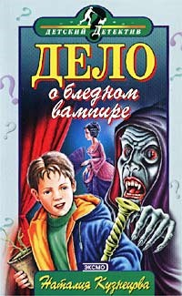

Дело о бледном вампире
Дело о бледном вампире
Ох, как не хотелось Ромке с Лешкой все осенние каникулы томиться в Воронеже. Но стоило бабушке друга прочитать им пожелтевшее письмо, как у Ромки загорелись глаза. Шутка ли: в одном из старых городских домов спрятан клад! Дело за малым — в считанные дни найти то, что больше полувека таилось от людских глаз. «Вперед, за сокровищами!» — решает Ромка, и брат с сестрой отправляются в путь. Странные события начинают происходить еще в поезде. В опустевшем вагоне перед Лешкой появляется самый настоящий… вампир.